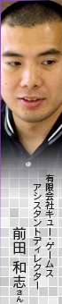
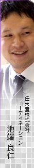

ディラン
惑星の雰囲気についてはハッキリ違いを出しているので、人によって好きな惑星が、それぞれ出てくると思います。私はわりとトレーニングステージが好きですね。あとは、3番目のミッションで訪れる、白黒に赤が混じった、星空の惑星も、昔の3Dゲームっぽいというか、ノスタルジックでお気に入りです。
呉服
敵も結構いろんなのがいるんですよね。中でも「ヒューマノイドタンク」っていうキャラクターの動きが間が抜けていて好きですね。

ディラン
元の『X』にもいたんだよね。ストイックな中にちょっとユーモアが入っているのもテーマとして大事なんです。今回、ナビゲーター役のVIX-529か敵しかしゃべらないけど、その会話の内容でもユーモアを感じてほしいです。
前田
VIX-529の口癖を書いてみたりもしましたね。どういう言葉を多用するかとか。
ディラン
性格まで考えてね。結構、味が出ていると思いますよ。
前田
最初はいかにも融通の効かないロボットだったんですが、ナビゲーターなのにこれではいかん、と緊急会議をしました。そこでプレイヤーの呼び方、「オソロシー」「ヤバイ」などの口癖、普段は真面目だけど怖がりで、肝心な所でミスをするのに、それは絶対認めない、といったユニークなキャラクターになりました。
そういえば、マスターアップの後に池端さんから529はゴ・フ・クなんですか？と聞かれたことがあり、その時に「あっ」と初めて気づいて、焦りました（笑）。
呉服
何も言いませんでしたが、僕はずっと気にしてました。ただの自意識過剰でしたね（笑）。
一同
（笑）
ディラン
『スターシップディフェンダー』にも同じようなキャラクターが出てきます。あれは『X』の1,000年後の世界なので（笑）。
N.O.M
そうなんですか？
ディラン
実は『リフレクト ミサイル』にもつながっているよね。
前田
はい。使っているミサイルは『X-RETURNS』に登場する宇宙戦闘タンク「VIXIV（ビクシブ）」のものと一緒だったりして（笑）。
今回、三作同時に開発をしていたのでつながりを設けています。共通の惑星があってミッション内容を合わせたり、パワークリスタルがエネルギーとして使われていたりします。どれも宇宙を意識したタイトルだったので、社内では勝手に「ギャラクシー三部作」って呼んでました。
せっかくですから、三作まとめて遊んで、どこが同じかと探してもらえたりするとうれしいですね（笑）。